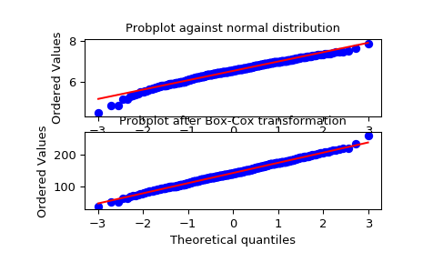

scipy.stats.boxcox¶
-
scipy.stats.boxcox(x, lmbda=None, alpha=None)[source]¶ Return a dataset transformed by a Box-Cox power transformation.
- Parameters
- xndarray
Input array. Must be positive 1-dimensional. Must not be constant.
- lmbda{None, scalar}, optional
If lmbda is not None, do the transformation for that value.
If lmbda is None, find the lambda that maximizes the log-likelihood function and return it as the second output argument.
- alpha{None, float}, optional
If
alphais not None, return the100 * (1-alpha)%confidence interval for lmbda as the third output argument. Must be between 0.0 and 1.0.
- Returns
- boxcoxndarray
Box-Cox power transformed array.
- maxlogfloat, optional
If the lmbda parameter is None, the second returned argument is the lambda that maximizes the log-likelihood function.
- (min_ci, max_ci)tuple of float, optional
If lmbda parameter is None and
alphais not None, this returned tuple of floats represents the minimum and maximum confidence limits givenalpha.
See also
Notes
The Box-Cox transform is given by:
y = (x**lmbda - 1) / lmbda, for lmbda > 0 log(x), for lmbda = 0
boxcoxrequires the input data to be positive. Sometimes a Box-Cox transformation provides a shift parameter to achieve this;boxcoxdoes not. Such a shift parameter is equivalent to adding a positive constant to x before callingboxcox.The confidence limits returned when
alphais provided give the interval where:\[llf(\hat{\lambda}) - llf(\lambda) < \frac{1}{2}\chi^2(1 - \alpha, 1),\]with
llfthe log-likelihood function and \(\chi^2\) the chi-squared function.References
G.E.P. Box and D.R. Cox, “An Analysis of Transformations”, Journal of the Royal Statistical Society B, 26, 211-252 (1964).
Examples
>>> from scipy import stats >>> import matplotlib.pyplot as plt
We generate some random variates from a non-normal distribution and make a probability plot for it, to show it is non-normal in the tails:
>>> fig = plt.figure() >>> ax1 = fig.add_subplot(211) >>> x = stats.loggamma.rvs(5, size=500) + 5 >>> prob = stats.probplot(x, dist=stats.norm, plot=ax1) >>> ax1.set_xlabel('') >>> ax1.set_title('Probplot against normal distribution')
We now use
boxcoxto transform the data so it’s closest to normal:>>> ax2 = fig.add_subplot(212) >>> xt, _ = stats.boxcox(x) >>> prob = stats.probplot(xt, dist=stats.norm, plot=ax2) >>> ax2.set_title('Probplot after Box-Cox transformation')
>>> plt.show()
